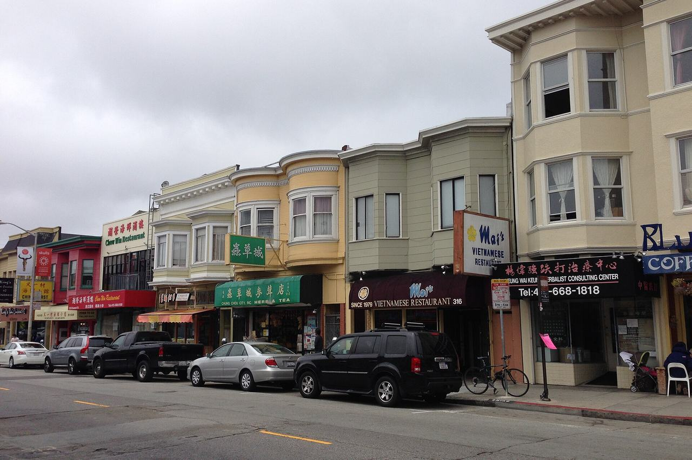

Inner Richmond
The city's Inner Richmond analysis neighborhood, between Golden Gate Park and the Presidio, east of Park Presidio Boulevard. Coverage begins with the parcels the Office of the Assessor-Recorder photographed for tax assessment between 1946 and 1964.

Map
Named buildings and landmarks
-
1

-
2

-
3

-
4
-
5
-
6

-
7
-
8

Streets documented so far
- 10th Avenue
4 buildings, built 1908–1913. - 11th Avenue
4 buildings, built 1906–1912; 2 in the Richmond Heights Historic District. - 12th Avenue
1 building, built 1923. - 2nd Avenue
3 buildings, built 1900. - 3rd Avenue
1 building, built 1907. - 5th Avenue
2 buildings, built 1904–1905. - 6th Avenue
2 buildings, built 1900–1906. - 7th Avenue
3 buildings, built 1900–1910. - 8th Avenue
2 buildings, built 1904–1909. - 9th Avenue
4 buildings, built 1910–1921. - Anza Street
3 buildings, built 1900–1911; 1 in the Richmond Heights Historic District. - Arguello Boulevard
3 buildings, built 1917–1918. - Balboa Street
2 buildings, built 1908–1915. - Cabrillo Street
2 buildings, built 1903–1907. - California Street
2 buildings, built 1911–1950. - Clement Street
1 building, built 1904. - Cornwall Street
1 building, built 1902. - Fourth Avenue
5 buildings, built 1902–2008. - Funston Avenue
2 buildings, built 1900–1912. - Geary Boulevard
1 building, built 1921. - Lake Street
1 building, built 1981. - Presidio Terrace
8 buildings, built 1906–2010; 8 in the Presidio Terrace Historic District.
Parks and public spaces
- 10th Ave & Clement Park
Neighborhood park or playground, 40,511 sq ft. - Angelo J. Rossi Playground
Neighborhood park or playground, 7.1 acres. - Argonne Playground
Neighborhood park or playground, 40,075 sq ft. - Mountain Lake Park
Neighborhood park or playground, 13.0 acres. - Muriel Leff Mini Park
Mini park, 10,454 sq ft. - Park Presidio Blvd
Parkway, 20.4 acres.
Historic districts here
Adjacent neighborhoods
Golden Gate Park is the southern boundary and the Presidio the northern one. The Outer Richmond continues west from Park Presidio Boulevard, with Seacliff on the bluffs beyond it. Presidio Heights adjoins north-east and Lone Mountain / USF is east across Arguello Boulevard.